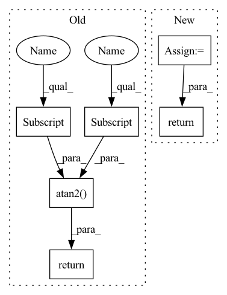

Pattern ID :27692

Before Change
beta = 1e-4
kl_loss = torch.mean(radius**2 - torch.log(radius) - 1)
self._regularisation_loss += beta * kl_loss
return torch.atan2(x[:,1], x[:,0]).unsqueeze(1) + np.pi // atan(y,x) -> [-pi, pi]
//return torch.sigmoid(x[:,:1]) * 2 * np.pi
After Change
def _forward(self, x):
// Transform outputs to angle and prepare prediction
res = super()._forward(x)
angle = res[:,0].unsqueeze(1)
kappa = res[:,1]
sigma = torch.sqrt(1. / kappa)
beta = 1e-3
kl_loss = torch.mean(sigma**2 - torch.log(sigma) - 1)
self._regularisation_loss += beta * kl_loss
return angle
class ZenithReconstruction(Task):
In pattern: SUPERPATTERN
Frequency: 3
Non-data size: 6
Instances
Fragment ID: 82187820
Project Name: icecube/graphnet
Commit Name: c2cefa65450c1e10b541e9b0538358e02e486a06
Time: 2021-11-16
Author: andreas.sogaard@gmail.com
File Name: src/gnn_reco/models/task/reconstruction.py
M Class Name: AzimuthReconstruction
N Class Name: AzimuthReconstruction
M Method Name: _forward(2)
N Method Name: _forward(2)
M Parent Class: AzimuthReconstructionWithKappa
N Parent Class: Task
M File Name: src/gnn_reco/models/task/reconstruction.py
N File Name: src/gnn_reco/models/task/reconstruction.py
M Start Line: 14
M End Line: 18
N Start Line: 25
N End Line: 32
'>
Before Change
beta = 1e-4
kl_loss = torch.mean(radius**2 - torch.log(radius) - 1)
self._regularisation_loss += beta * kl_loss
return torch.atan2(x[:,1], x[:,0]).unsqueeze(1) + np.pi // atan(y,x) -> [-pi, pi]
//return torch.sigmoid(x[:,:1]) * 2 * np.pi
After Change
def _forward(self, x):
// Transform outputs to angle and prepare prediction
res = super()._forward(x)
angle = res[:,0].unsqueeze(1)
kappa = res[:,1]
sigma = torch.sqrt(1. / kappa)
beta = 1e-3
kl_loss = torch.mean(sigma**2 - torch.log(sigma) - 1)
self._regularisation_loss += beta * kl_loss
return angle
class ZenithReconstruction(Task):
'>
Fragment ID: 82187821
Project Name: icecube/graphnet
Commit Name: c2cefa65450c1e10b541e9b0538358e02e486a06
Time: 2021-11-16
Author: andreas.sogaard@gmail.com
File Name: src/gnn_reco/models/task/reconstruction.py
M Class Name: AzimuthReconstruction
N Class Name: AzimuthReconstruction
M Method Name: _forward(2)
N Method Name: _forward(2)
M Parent Class: AzimuthReconstructionWithKappa
N Parent Class: Task
M File Name: src/gnn_reco/models/task/reconstruction.py
N File Name: src/gnn_reco/models/task/reconstruction.py
M Start Line: 14
M End Line: 18
N Start Line: 25
N End Line: 32
'>
Before Change
def mag_phase(complex_tensor):
mag = (complex_tensor.pow(2.).sum(-1) + 1e-8).pow(0.5 * 1.0)
phase = torch.atan2(complex_tensor[..., 1], complex_tensor[..., 0])
return mag, phase
def norm_amplitude(y, scalar=None, eps=1e-6):
After Change
def mag_phase(complex_tensor):
return torch.abs(complex_tensor), torch.angle(complex_tensor)
def norm_amplitude(y, scalar=None, eps=1e-6):
'>
Fragment ID: 82187818
Project Name: haoxiangsnr/fullsubnet
Commit Name: 321920989a4aa255158770213e814befc8f94f27
Time: 2021-02-08
Author: haoxiangsnr@gmail.com
File Name: audio_zen/acoustic/feature.py
M Class Name: AnonimousClass
N Class Name: AnonimousClass
M Method Name: mag_phase(1)
N Method Name: mag_phase(1)
M Parent Class:
N Parent Class:
M File Name: audio_zen/acoustic/feature.py
N File Name: audio_zen/acoustic/feature.py
M Start Line: 27
M End Line: 29
N Start Line: 68
N End Line: 68